Modify the model
In the next few steps, explore the various methods to modify models in Solid Edge, then edit the value of a dimension to edit the model.
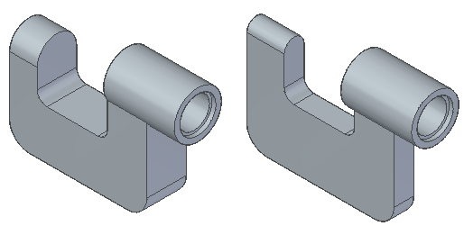
In PathFinder, click Protrusion 1, and then click the Dynamic Edit button.
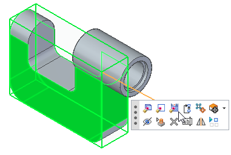
The dimensions for the protrusions are displayed.
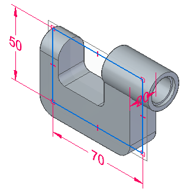
Click the dimension shown.
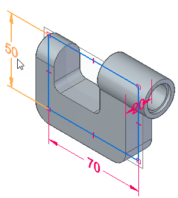
The Dimension Value box is displayed so you can edit the dimension value.
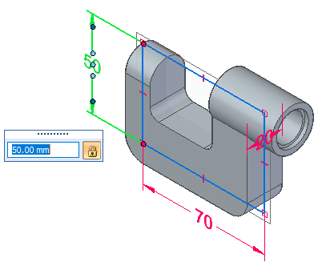
Type 55 and press Enter.
Notice that the top-left and top right-edge move upward, even though the edge was previously divided by a cutout and then consumed by rounds.
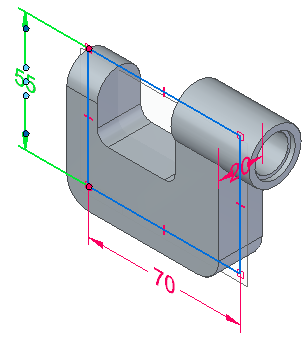
Change the bottom dimension to 75.
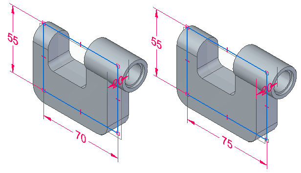
Change the side dimension to 10.
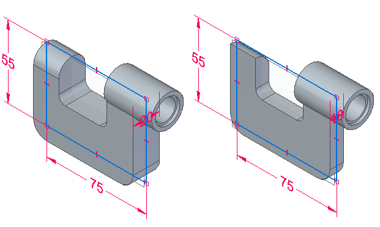
Notice that the front side of the round is consumed.
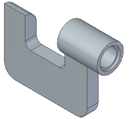
Press Esc to dismiss the Dynamic Edit command.
In PathFinder, click Round 1, and then click the Dynamic Edit button.
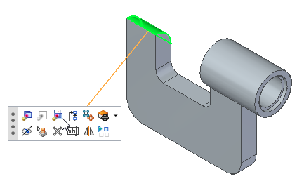
Click the dimension shown.
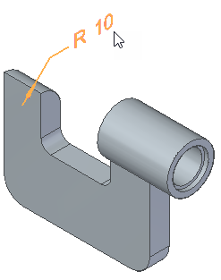
In the Dimension Value box, type 5 and press Enter.
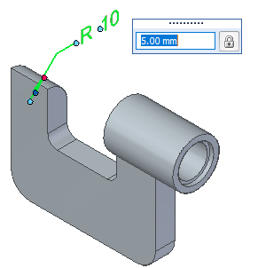
Notice that the round that was consumed earlier is now restored.
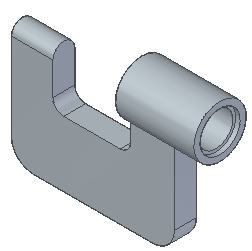
Press Esc to dismiss the Dynamic Edit command.
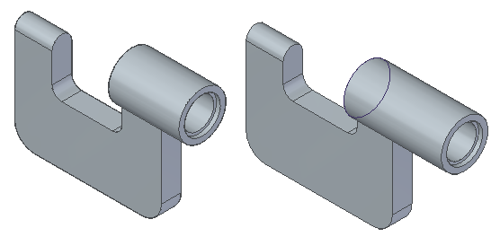
In PathFinder, click Cutout 1, and then click the Dynamic Edit button.
The dimensions for the cutout are displayed.
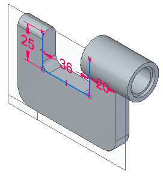
Change the dimensions as listed below.
|
Existing dimension |
New dimension |
|---|---|
|
25 |
20 |
|
20 |
18 |
|
36 |
38 |
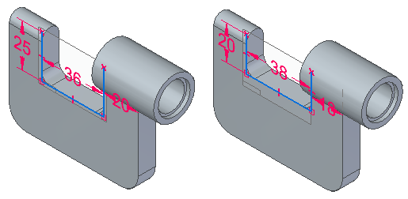
Press Esc to dismiss the Dynamic Edit command.
In PathFinder, click Protrusion 2, and then click the Dynamic Edit button.
The dimensions for the protrusion are displayed.
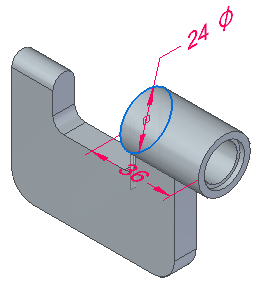
Click the dimension shown.
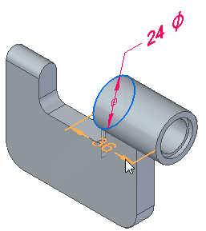
Click inside the Dimension Value box and use the mouse wheel to scroll until the value is 50.
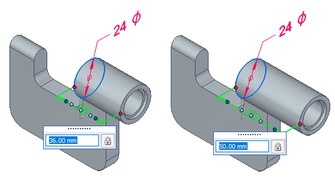
Click to update the dimension.
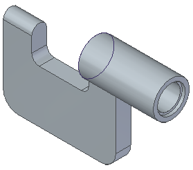
Press Esc to dismiss the Dynamic Edit command.